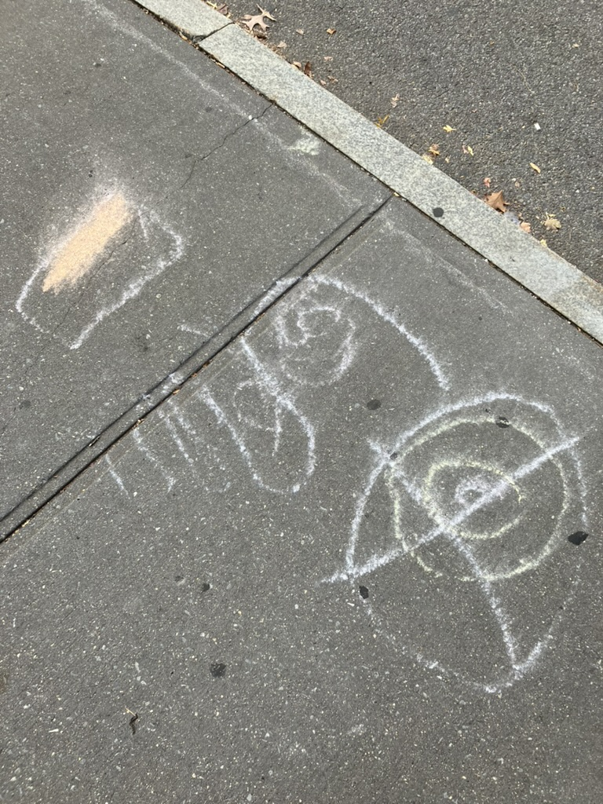

Method
Plant variables of data, identify their category labels, and then use those to map what is missing onto your state of belonging. Feel the results and then plant new variables to repeat.
Define your data variables first, so your results are grounded in experience and access. Build a trajectory from sensing and map it towards the future you need.
I make language that challenges the dominant gaze on our bodies. You characterize and create new meanings and relations, instead of interpreting or explaining yourself until details fall away.

Five steps
-
Plant: name
What is available from experience?
Color: nude · approach → jump
-
Harvest: sort
What categories does experiential data fall into?
Color: pink · category → place
-
Move: protect
How can you relate the categories to create belonging?
Color: gold · pull → hide
-
Sense: pause
What category does your body say is missing?
Color: red · limit → cry
-
Re-plant: return
What is available for protection?
Color: green · transition → grow

Open your desired relation
| tool | steps | what it does |
|---|---|---|
| gamma spectroscopy | 1 | This web app analyzes an uploaded image and describes qualities such as luminance and spatial frequency. It was designed to explore high contrast vision, called visual snow. Use the app to compare images. |
| question generator | 1 · 2 · 5 | This spreadsheet uses a table of input data and organizes it by its column name into random phrases. The phrases prompt questions of relation amongst the data. Use it to find new connections, and consider new directions. |
| pluriverse journal | 1 · 3 | This form with an opaque letter-format output is directed at policy makers, designed to place concepts for justice with a narrative. The story structure is bottom-up design as informed by writings of Arturo Escobar. Input responses are labeled as concepts for relation, and interpolated for the letter-format output. The aim is to bring personal story closer to labor in an autonomous way for reasons of community and comfort. |
| language to music rhythm reader | 1 · 3 · 5 | This text analyzer interprets rhythm and names it. Grammar turns to music. Type in a phrase and get the composition as a musical form. Use this mirror to find the resonance you envision. |
| le retour ouvert | 1 · 5 | This digital journal interface opens the user unto a return self-defined. The knot sequence used from my semantic color data is a double loop trajectory. Fill in the blanks while traversing through the prose, and land in a resolution. I am not claiming to solve user problems. This project empowers the user to fill in a story solution using their own data relations. |
| lazy poem maker | 1 · 5 | This spreadsheet applies user input words to a poem template. The relations change within the template as the user updates the input variables. The generated poem is organized by labeled columns that can be adjusted to create a new template. |
| womb journal | 1 · 5 | This web app generates stochastic questions from labeled word groups and matches user input responses to an image-character string and a poetic translation. The questions prompt intersectional feminist thought. The aim is for the user to explore a provoking tension and find something whimsical or divine in the generated feedback. |
| color plotter | 2 | This is a creative analysis tool for discovering new, more resonant relations represented by color sequences. The user inputs data matching color words chosen from different modes. New context is applied through string interpolation with concatenation. |
| color oracle | 2 · 3 · 5 | This color sequencing GPT can help create quality new options when you are stuck. Colors are sorted with associated meanings in sequences that are labeled for different outcomes. The user will get an array of options to choose from upon entering a concern. There is no definitive feedback. |
| cross impact matrix | 2 · 5 | This spreadsheet was designed to find shadows hiding amongst active threads that need to be integrated more deeply. It can be used to find new directions based on what is already occuring. It can also be used to gain a more integrated perspective across fields. Look for repetitions across columns and rows to find new threads. |
| momentum visualizer | 2 · 5 | This dashboard visualizes an input phrase as a color trajectory and sequence based on a color to word mapping dataset. It can be used to visualize states of acceleration and transitions into stillness across an idea's plot. Find a framing for your situation that has the oscillations you need. Limit your query with constraints. |
| question questioner (WIP) | 2 · 5 | This web app simulates different perspectives separated by thresholds as represented by questions. The rotations are applied as semantic fields. Use the app to gain perspective on a stance or trajectory. Use the stone-cutting mode to get a more interactive response indicating what to lean into and let go of. The aim is to help the user understand relationships better. |
| concrete poem generator (WIP) | 3 | This interface turns text to concrete poems based on a set of 7 chosen women in the field who detailed shape, erasure, texture and rhythm, math, divinity, striations, and narrative. Concrete poetry is an aesthetic form of poetry. The form chosen is based on the input sentiment. Visualize a phrase for the tensions it expresses. |
| george floyd direct confrontation (WIP) | 3 | This interface for creating new language around an obstacle is inspired by the careless and confrontational murder of George Floyd by the police. The user input is ordered to create a new pathway to negotiation. This is a bottom-up design. |
| toussaint louverture march song (WIP) | 3 | This interface adds context by sequencing user input to create a parable about the detailed moment. The intended user input content is concerned with personal or community safety. There is an opening prescribed as indicated by user inputs. The source of the obstacle is defined, along with allies. Inspired by Toussaint Louverture's revolutionary tactics, a middle-ground without compormise is identified. Use this interface to help you decide what you're willing to let go of. |
| sound visualizer in color | 4 | This web app maps microphone sounds to color pixels from a qualitative analysis. It is designed based on a matrix of sound to color synesthesia. Sounds are categorized and visualized in a stream of pixels. |
| color to conformal sound | 4 | This interactive web app maps user webcam to respective noise color to create haptic feedback. It translates color to sound. This tool can be used to add an expanded dimension to the sound environment. |
| sound to conformal color | 4 | This interactive web app maps input sound to respective noise color. It translates sound to visual feedback. Use it to understand your sonic environment. |
| color dance | 4 | This webcam filter with interactive text and audio is designed to hold movement through feelings of dispossession. The generated color filter and poetry guide the user to sort through different movements and find a comforting change. The color word to pose taxonomy provides somatic feedback that is open to interpretation. Find a new comfort in opening based on your relationship between your body and the color word poetry. |
| tocar y fijar | 4 | This song is improvised without musical theory, as a form of meditative expression. The texture of the audio is like threads being mended together. |
| self study with a sonic mirror | 4 | This interface responds to user input microphone and webcam to create a visualization of user movement. There are two different recorded guided meditations that you can play in the environment. The first is for dissolving self doubt from the disposession that comes with misunderstanding, and the other is for generating thoughts attracting a collective revolution. This tool aims to create the scaffolding in design needed to facilitate personal reflection in a self supporting manner. |
| weaving meditation | 4 | This is an audio of a voice diary entry of spoken word poetry. It was recorded from the tension inpsired by a state at the intersection of awe and apprehension. That tension tends to show up when we have to work but we are interested in other endeavors. I search for the language to describe a method of remaining in possession of the self. The poem is recited as a reflection on memories of vulnerability. |
Get guided through the method →
References
- Guilbeault, Douglas, Ethan O. Nadler, Mark Chu, Donald Ruggiero Lo Sardo, Aabir Abubaker Kar, and Bhargav Srinivasa Desikan. 2020. "Color Associations in Abstract Semantic Domains." Cognition 201: 104306. https://doi.org/10.1016/j.cognition.2020.104306
- Pickering, Andrew. 2017. "The Ontological Turn: Taking Different Worlds Seriously." Social Analysis 61 (2): 134–150. https://doi.org/10.3167/sa.2017.610209
- Surov, Ilya A. 2022. "Quantum Core Affect: Color-Emotion Structure of Semantic Atom." Frontiers in Psychology 13: 838029. https://doi.org/10.3389/fpsyg.2022.838029